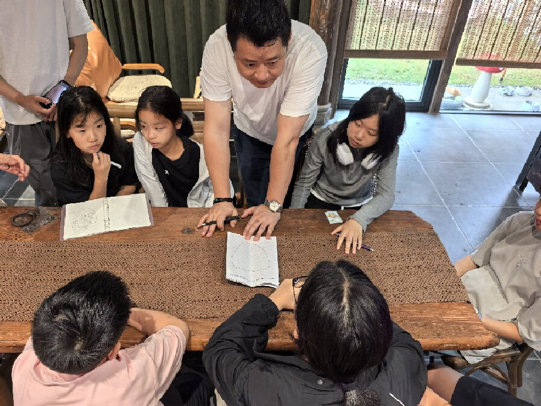

闹市藏静境
医道安尘劳
尘世车马喧嚣，世人终日耗损元阳、经络淤滞、身心俱疲。尔意堂隐于锦江区梨花街楼宇之内，融黄老道统与岐黄古法，集诊疗、养生、玄谈于一体，于闹市之中筑一处岐黄静境。

这里不止是诊疗场所，更是以道与医养心空间。堂内艾香萦绕，清茶常设。以银针、雷音艾灸、正骨推拿、瑶浴药蒸、道地本草方药，针、艾、药、手技内外同调。
既调筋骨病痛、结节慢病、妇科诸疾，亦关注现代人情志内耗，追求形神共调，固本培元。于锦官闹市开辟一方玄静杏林，不逐速效浮名，以青囊守仁心，以董针渡尘劳，以本草安浮生。

